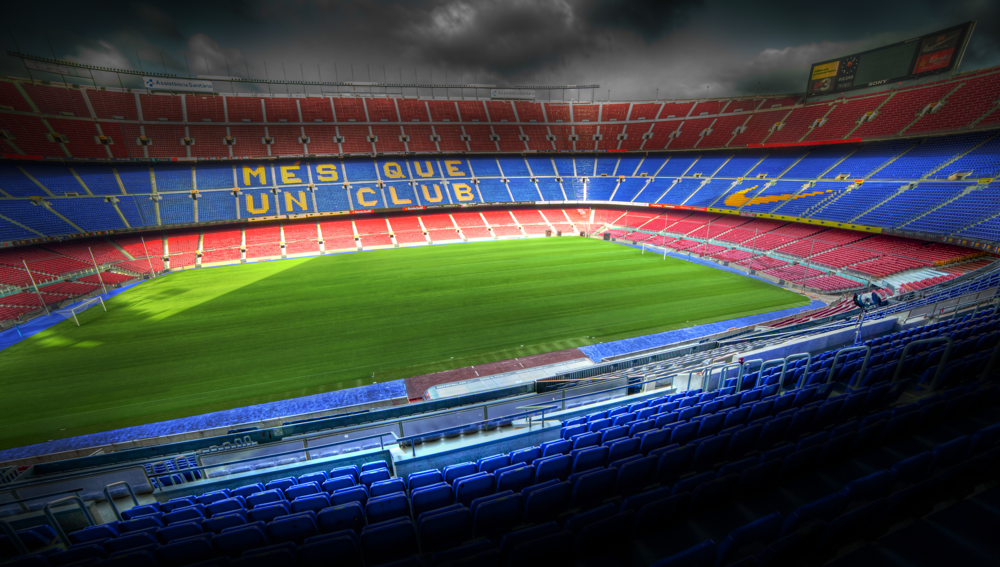

-Vonal-
A Camp Nou
A Camp Nou , gyakran Nou Camp az FC Barcelona
labdarúgócsapatának otthona Barcelonában, Katalóniában. A stadion 1957-ben készült el, az akkorra kicsinek
bizonyuló Les Corts helyett, és Európa legtöbb néző befogadására alkalmas labdarúgó arénája lett.[3] Az
1998-99-es szezon során az UEFA "ötcsillagos stadion" minősítéssel ismerte el a Barça otthonának nagyszerűségét.
Az épület hivatalos neve Estadi del Futbol Club Barcelona volt 2000-ig, amikor a tagok a névváltoztatásról
rendezett szavazáson azt javasolták, hogy legyen az addigi becenév, a Camp Nou a hivatalos név.
-Vonal-
Az építkezés
Az új stadion terveinek elkészítését Francesc Mitjans i Miró, Josep Soteras
Mauri és Lorenzo García Barbón építészekre bízták. A klub az INGAR SA céget bízta meg a kivitelezéssel, akik
66,5 millió pezetáért vállalták el a létesítmény felépítését másfél éven belül. Azonban a végső költségek
tetemesen meghaladták az ajánlatban szereplőt, elérték a 288 millió pezetát. Az összeget folyamatos
bankkölcsönök segítségével előteremtették, így felépülhetett a stadion, de a klubnak ezután éveken át
törlesztenie kellett az adósságát.
-Vonal-
A Felavatás
1957. szeptember 24-ére jelölték ki a stadion felavatásának időpontját. A
szervezőbizottságnak - mely a nyitóceremónia tervezésére alakult - két elnöke volt: Aleix Buxeres és Nicolau
Casaus. Szeptember 21-én a Barcelonai Tanács nagytermében José Maria de Cossío, a Spanyol Királyi Akadémia tagja
olvasta fel a kiáltványt, mellyel hivatalosan megnyitotta az új stadion felavatásának ünnepségét. A fesztivál
napjára a város a klub színeibe öltözött. Az avatás ünnepi misével kezdődött, majd Barcelona érseke, Gregorio
Modrego felszentelte a stadiont. Rögtön ezután a Gracienc kórus elénekelte Handel (Messiás) Hallelujah-ját, majd
körbehordozták a Montserrati Szűzanya képét. A világ sport és politikai méltóságainak sokasága ült az elnöki
páholyban Francesc Miró-Sans mellett, beleértve a közlekedési minisztert, a sportminisztert, Barcelona polgári
kormányzóját és polgármesterét. Ez a jelentős esemény elég volt, hogy ihletet merítsen a híres költő, Josep M.
de Sagarra és megírja „Blau Grana" címmel szonettjét. Emellett megalkották a barcelonai stadion himnuszát Josep
Badia dalszövege alapján, melyet Adolf Cabané zenésített meg.
-Vonal-